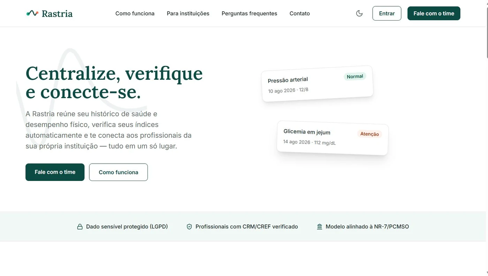

Projeto em equipe · Em desenvolvimentoTeam project · In development
RastrIA
Plataforma de acompanhamento de saúde e desempenho físico para instituições, feita em equipe para o Edital Centelha.A health and physical-performance tracking platform for institutions, built as a team for the Centelha program.
- Rotas auditadasRoutes audited
- 3018 correções geradas18 fixes produced
- Testes automatizadosAutomated tests
- 109em 7 componentesacross 7 components
- Varreduras de acessibilidadeAccessibility sweeps
- 43zero violaçõeszero violations
- Itens essenciais WCAGEssential WCAG items
- 15/15meta: 2.2 AA + eMAG 3.1target: 2.2 AA + eMAG 3.1
ProblemaProblem
Na Polícia Militar de Alagoas, os dados de saúde e desempenho físico de cada policial ficam espalhados em registros separados. O RastrIA junta esses prontuários numa plataforma única, pensada para uso institucional (B2B/B2G): não existe cadastro público, e as contas são criadas pela própria instituição.
At the Alagoas Military Police, each officer’s health and fitness data is scattered across separate records. RastrIA brings those records into a single platform built for institutional use (B2B/B2G): there’s no public sign-up, and accounts are provisioned by the institution itself.
Stack e arquiteturaStack and architecture
O sistema tem duas metades: a que guarda e protege os dados, feita em Django, e a tela que o usuário vê no navegador, feita em React. A primeira é uma API em Django REST Framework; a segunda, uma aplicação de página única com Vite e Tailwind. Os dois vivem no mesmo repositório (backend/ e frontend/) e o deploy é feito no Railway. No time, trabalho nas duas pontas.
The system has two halves: the one that stores and protects the data, built in Django, and the screen the user sees in the browser, built in React. The first is a Django REST Framework API; the second, a single-page app with Vite and Tailwind. Both live in the same repository (backend/ and frontend/) and are deployed on Railway. I work on both ends of the stack.
Decisões e dificuldadesDecisions and challenges
Acessibilidade entrou como requisito, não como acabamento. O cliente é uma instituição pública, o que traz o eMAG 3.1 junto com a WCAG 2.2 AA, e isso muda o que dá para construir: componente sem foco visível, informação transmitida só por cor e gaveta que prende o teclado deixam de ser opção.
Accessibility was a requirement, not a finish. The client is a public institution, which brings Brazil’s eMAG 3.1 alongside WCAG 2.2 AA, and that changes what can be built: a component with no visible focus, information carried by color alone, a drawer that traps the keyboard, none of those are options.
A parte difícil não foi corrigir, foi impedir que voltasse. Uma auditoria em setembro cobriu as 30 rotas e gerou 18 correções. Para que não houvesse regressão, boa parte da verificação virou teste: lint jsx-a11y em todo o src, axe por componente e uma varredura axe por página, que roda cada rota nos temas claro e escuro, com cada preferência de acessibilidade isolada, com o tour aberto e com a tela reduzida a 320px.
The hard part wasn’t fixing things, it was keeping them fixed. A September audit covered all 30 routes and produced 18 fixes. To stop regressions, most of the checking became tests: jsx-a11y lint across src, axe per component, and an axe sweep per page that runs every route in light and dark themes, with each accessibility preference isolated, with the guided tour open, and with the screen narrowed to 320px.
A separação entre as duas pontas também foi decisão de projeto. O frontend roda sobre uma camada de dados simulada com TanStack Query, então as telas puderam ser construídas e testadas com estados de carregamento e de erro reais, sem esperar cada endpoint ficar pronto. E como o produto promete que o comando não vê dado clínico individual, a segregação de acesso por papel é testada em todos os pares de papel e rota.
Splitting the two ends was a design decision too. The frontend runs on a mock data layer with TanStack Query, so screens could be built and tested against real loading and error states without waiting for each endpoint. And since the product promises that command staff never see individual clinical data, role-based access is tested across every role and route pair.
ResultadoOutcome
O projeto está em desenvolvimento. Uma versão de testes está no ar em rastria.up.railway.app.
The project is in development. A test build is live at rastria.up.railway.app.

A auditoria aberta em 23/09/2026 foi fechada em 03/10, com os 15 itens essenciais resolvidos e a verificação automática no lugar.
The audit opened on 2026-09-23 was closed on 10-03, with all 15 essential items resolved and automated checking in place.
Próximos passosNext steps
- Validação com leitor de tela real, NVDA no Firefox e VoiceOver no iOS. Ferramenta automática cobre de 30% a 40% dos critérios da WCAG, e o eMAG exige as duas avaliações
- Ligar as telas à API, substituindo a camada de dados simulada
- Primeira entrega institucional
- Validation with a real screen reader, NVDA on Firefox and VoiceOver on iOS. Automated tools cover 30% to 40% of WCAG criteria, and eMAG requires both kinds of evaluation
- Connect the screens to the API, replacing the mock data layer
- First institutional release
PolyMorph →
Programa que reescreve meu currículo para cada vaga, sem inventar nada.A program that rewrites my résumé for each job posting, without making anything up.
Vamos conversarLet’s talk
Estou procurando estágio em desenvolvimento, remoto ou presencial em Maceió. Se quiser falar sobre este projeto ou sobre uma vaga, é só escrever.I’m looking for a development internship, remote or on-site in Maceió. If you want to talk about this project or about a role, just write.